Project 3: Zine Game
Final Submission Due: Week 10 Thursday, December 5
Please read the How To Submit page for more detailed instructions.
Prompt
At the start of the quarter, we unpacked the many possible meanings of the term "engine."
To conclude this course, our final project will focus on this definition of the "engine":
"A person or group of people which influence a larger group; a driving force."
"Anything used to effect a purpose; any device or contrivance; an agent."
Build a zine game that acts as an engine for containing, transferring, and transforming ideas, beliefs, and principles.
Consider the following options:
- An original game inspired by a personal experience;
- A personal response to an existing piece (a film, a manifesto, an article, an event...);
- A gift or letter exchange addressed to someone, or a group of people.
- A metacritique of what a game engine can do, or what games could be.
You may also consider extending upon or remixing a previous project as long as it meets the project prompt and requirements. Your project proposal must be approved by an instructor / TA prior to the submission.
You are also welcome to work in groups of 2-3, please consult the instructor / TA for further directions beforehand.
What is a zine?
A zine is a small-circulation booklet or magazine, often created by hand or using digital tools through self-publishing. Unlike traditional magazines, zines are characterized by their DIY ethos and independent spirit. They cover a vast array of topics, from personal stories to art, poetry, and music. They’re standout pieces of print media because they can be as varied as the creators behind them.
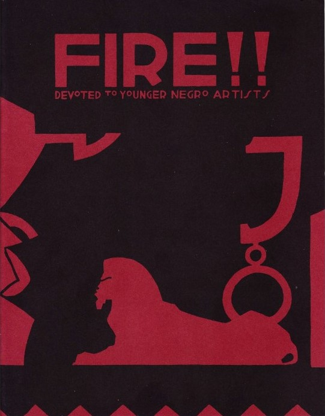
A zine can also be thought of as a form of participatory culture, which has low barriers for artistic expression and civic engagement. Considering the tools we have today, blogging, website building, and game-making can be tools for zine-making as well.
Ultimately, zines allow creators to explore topics close to their hearts, share their perspectives, and connect with like-minded individuals. They often challenge convention, offering alternative viewpoints and fostering a sense of empowerment among readers and creators alike.
Some examples / inspirations:
- Submissions to the Zine Idea Generator game jam.
- A collection of interactive zines on itch.io using HTML5 Reader for Electric Zine Maker
What is a zine game?
When an individual or pair is solely responsible for a work you can watch an individual style develop: you can trace themes, both mechanical and otherwise, across a creator's work. [...] And being able (or learning to) identify the individual style, and growth, of individual authors leads to better criticism and a critical understanding of games. Not to mention, like I said, more personal games, more relevant games, more games with something to say. I want a world where everyone is capable of sitting down at a computer and making a game by herself. This is not to say that all games need to be made that way, but as a paradigm, I think the individual author has more to offer us than the team, especially at a time when videogames are so seemingly creatively bankrupt.
Just like how zines (or small-scale, self-published works) offer avenues for communication, expression, and knowledge circulation amongst niche and marginalised communities, zine games emerged from the desire to reclaim individual authorship and creative autonomy in videogame development from mainstream industries.
If games could be whatever and however you wanted them to be, what ideas, stories, and play experiences would you like to include?
What sort of games could emerge only if they were authored by an individual or small group of people, uninhibited by the interests of external forces and stakeholders?
Personal Zines (Perzines)
autobiographical, sharing personal stories, experiences, and reflections.
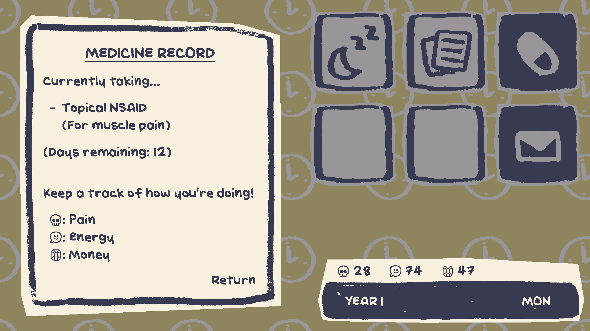
game mechanics based on real experiences
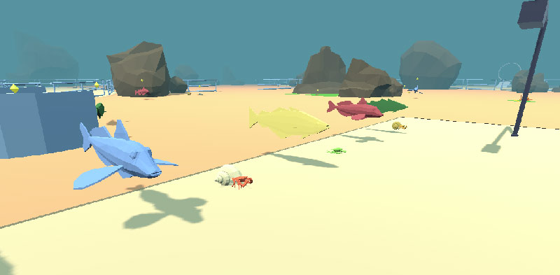
Postcards

A videogame is a hotel is a machine for framing an experience which never actually occurs. Wonderful! You climb inside the shell of someone else’s excavated and inscrutable desires, you drop off your bags, you crawl around the litter where consciousness has passed, chairs, tables, boxes, doors, and then you leave and buy a postcard to remind you where you’ve been.
Poetry / Literary / Essays
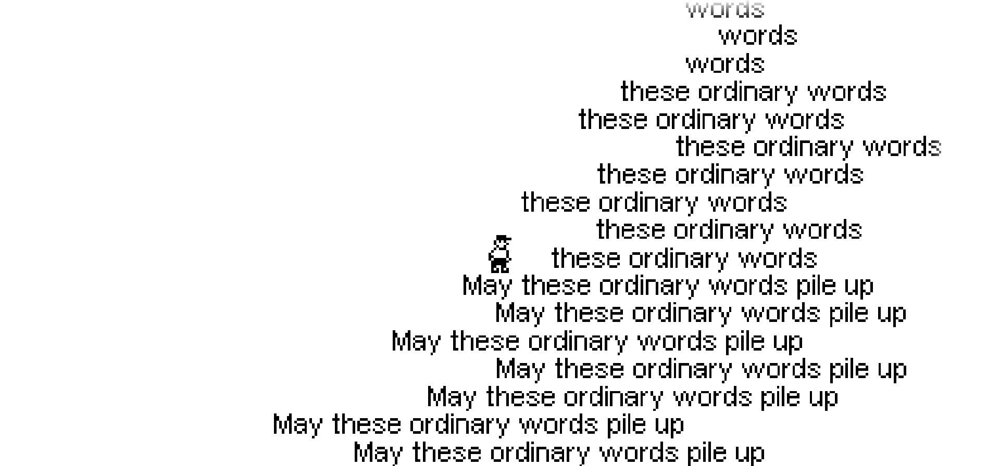

Requirements
There will be a project sketch due on Week 8 Thurday, November 21. Please bring your ideas / prototypes to class for discussion.
Your project must address the prompt above, and must have sound.
AND include at least two of the following aspects into your project:
Interactive Text
A linear journey. A branching dialogue system. A visual novel. Text is an easy way to set the tone and context of your piece. If you're interested in getting into the weeds of writing, consider implementing a system for interacting with your text.
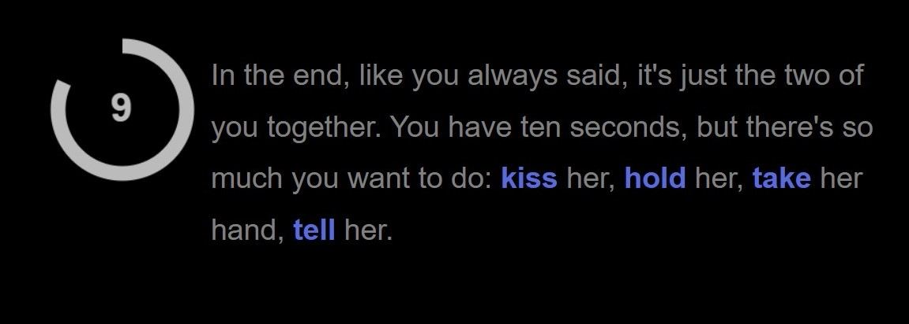

Camera Systems
Consider the perspective and point of view of the players. Include multiple camera perspectives in your project. This could be set up using overlay cameras, camera switching, or a more elaborate camera sytem like Cinemachine.
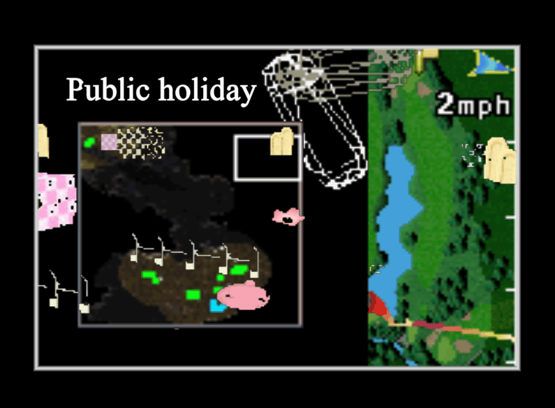

Inventory / Collections / Save System

The inventory as metaphor or device for storytelling can be seen as an alternative and, as Le Guin argues, precursor to linear, heroic modes of fiction.
If it is a human thing to do to put something you want, because it’s useful, edible, or beautiful, into a bag, or a basket, or a bit of rolled bark or leaf, or a net woven of your own hair, or what have you, and then take it home with you, home being another, larger kind of pouch or bag, a container for people, and then later on you take it out and eat it or share it or store it up for winter in a solider container or put it in the medicine bundle or the shrine or the museum, the holy place, the area that contains what is sacred, and then next day you probably do much the same again–if to do that is human, if that’s what it takes, then I am a human being after all. Fully, freely, gladly, for the first time.
Through design, inventory items carry meaning, further solidifying an invented world, elaborating on relationships, alluding to narrative futures.
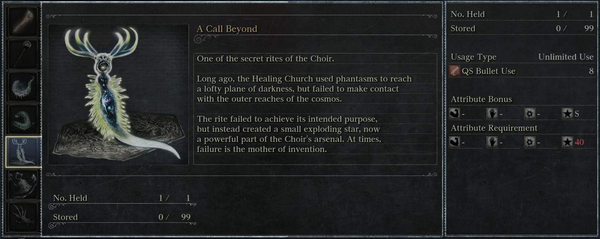
While a jump is immediate, items have potential and an inventory holds the branching possibilities from which your player-character can select.
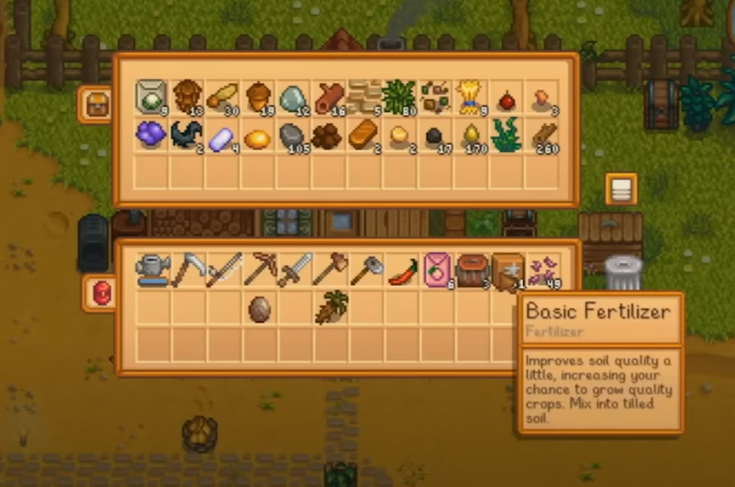
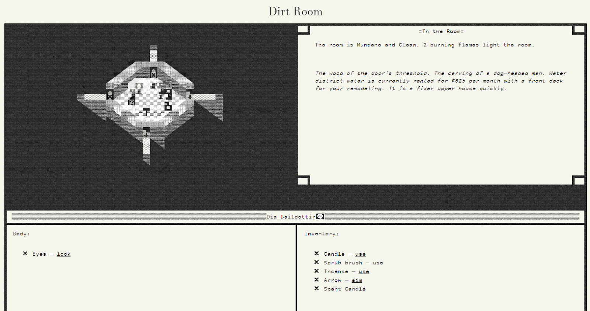
As a prosthetic extension of the player character's form, inventory items also change how a player engages with the surrounding territory.
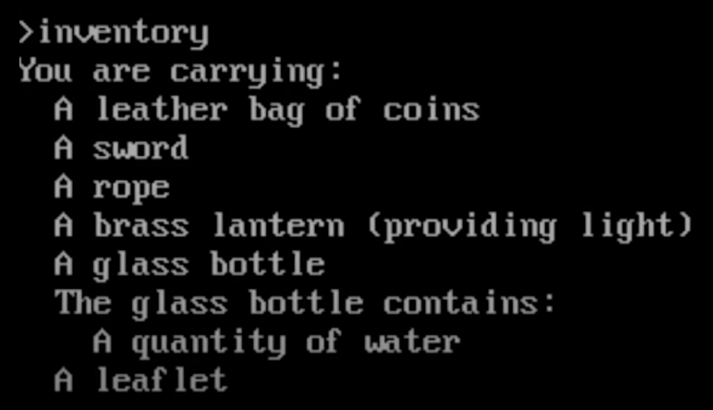
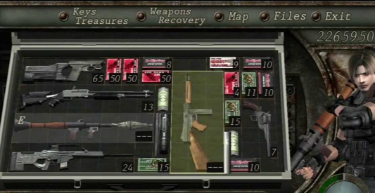
Evaluation
Your final project will be evaluated according to the guidelines listed in the course syllabus.